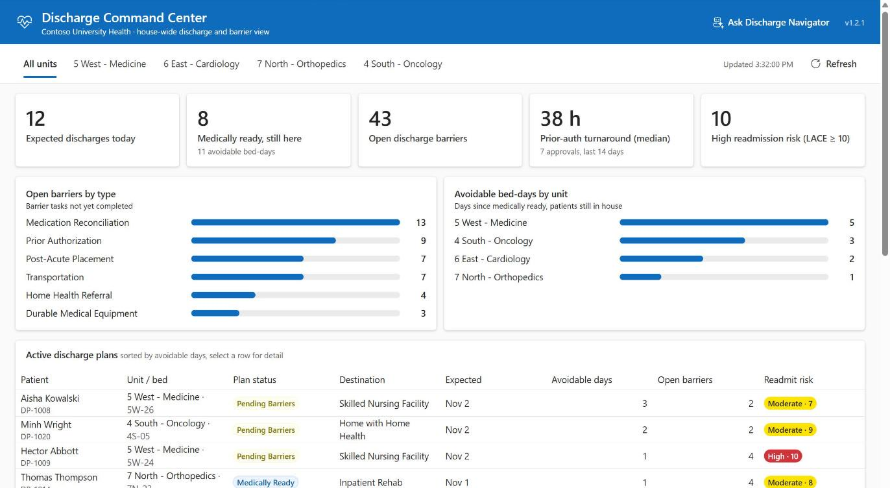

Discharge Navigator, an agent built in Copilot Studio, reads the live discharge plan with your permissions, in Teams, Microsoft 365 Copilot or the app.
The agent hands each writing job to the right model deployment in Microsoft Foundry, behind Azure API Management. Clinicians review and sign.
A huddle board the nurse manager built by describing it. A dashboard a pro developer built in React. One copy of the data in Dataverse.

It runs in your Microsoft 365, Power Platform and Azure, signed in with your Entra ID.